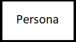
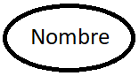
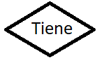
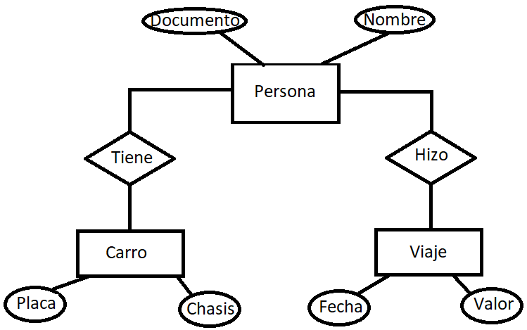

Conceptos del modelo entidad relación
Entidad
Es un objeto que representa a algo o alguien en el mundo real, ya sea de forma física o conceptual. Por ejemplo una persona, un carro, un avión, un trámite bancario, un viaje. Todos estos objetos se convierten en las tablas donde se almacenan los datos.
En el modelo entidad relación, la entidad se representa por medio de un rectángulo. Ejemplo:
Atributos
Son las características que describen o determinan a las entidades. Por ejemplo, una persona (que sería la entidad) tiene un documento de identidad, un nombre, un apellido, fecha de nacimiento. Todas estas características se convierten en las columnas de la base de datos.
En el modelo entidad relación, los atributos se representan por medio de óvalos. Ejemplo:
Relaciones
Es la asociación entre las entidades, que dan razón de su dependencia. Por ejemplo una persona puede tener un carro y/o puede realizar un viaje, por lo tanto la entidad persona se podrúa relacionar con las entidades carro y viaje.
En el modelo entidad relación, las relaciones se expresan en lenguaje natural por medio de un rombo. Ejemplo:
Ejemplo
De esta manera en un modelo entidad relación, podemos tener las entidades, sus atributos y las relaciones entre entidades de la siguiente manera:
En las siguines secciones se explicará los distintos tipos de relación y su cardindalidad.